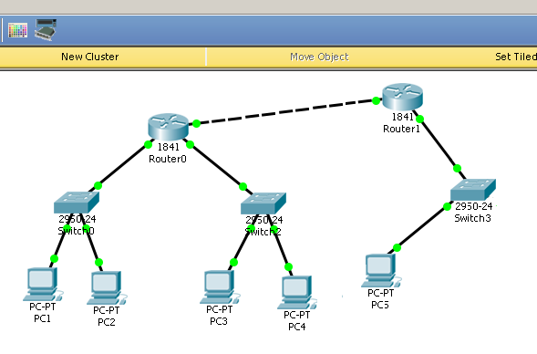
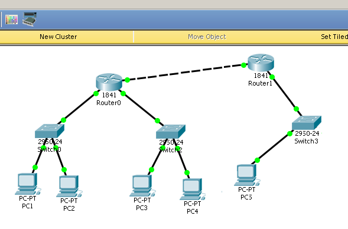

Студент группы
ИДМ-17-06
Лабораторная работа №1
Экосистема разработки программ с открытым кодом
Создана личная страница студента с использованием html/css. Произведена работа с git и github.
Лабораторная работа №2
Разработка веб-приложения
WikiCode
Социальная сеть-это сайт для хранения и управления динамическими документами для разработчиков, математиков, физиков, преподавателей, студентов и т. д.
В своей команде выполнял функции администрирования проекта и отвечал за бизнес-аналитику.
Лабораторная работа №3
Настройка локальной сети передачи данных
В симуляторе Cisco Packet Tracer на рабочем столе было размещено 5 компьютеров, 3 коммутатора и 2 маршрутизатора.
 Всё оборудование было соеденино и настроено с помощью Cisco IOS для успешной передачи информации между компьютерами. Результат - положительный.

Всё оборудование было соеденино и настроено с помощью Cisco IOS для успешной передачи информации между компьютерами. Результат - положительный.

Подготовка к экзамену
Самооценка прохождения теста по инновациям, формулировка одного вопроса по теме "Интернет-технологии" в одной из форм, встречающихся в тесте. Презентации лекций и тесты расположены на Яндекс-Диске.
Вопрос: Клиент-серверная технология передачи гипертекста предполаает:
- Потребитель-клиент, инициировав соединение с поставщиком-сервером,принимает запросы от сервера
- Поставщик-сервер инициирует соединение с потребителем-клиентом, разрешая передачу гипертекста
- Поставщик-сервер, получив запрос, производит необходимые действия и возвращает обратно клиенту ответ с результатом
- Соединение устанавливаются без участия клиента и сервера, они предназначены лишь для обработки и хранения информации
- Потребитель-клиент, посылает запрос серверу, инициировав соединение с сервером